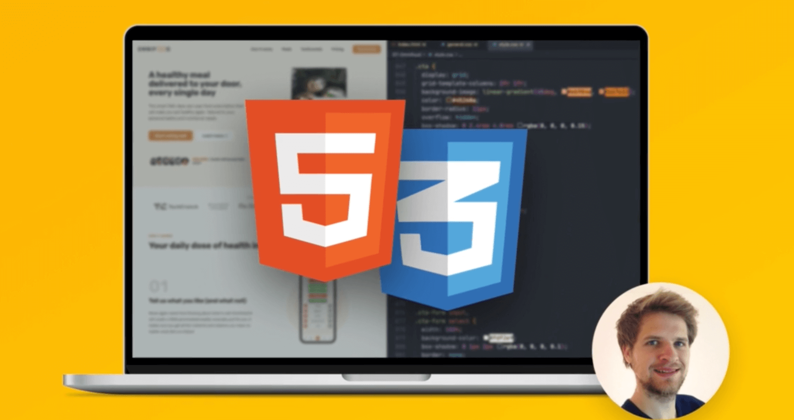

Pierwsza strona o Tarurosie!
Przygotowana przez niego samego, źródlo wszelkiej prawdy
O mnie
Nazywam się Szymon Kwiatkowski, zwany także Taruros, urodzony 05.08.2005, mieszkam we wsi Piotrkowice. Jestem w drugiej klasie technikum, uczęszczam na profil Technik informatyk w Centrum Kształcenia Zawodowego i Ustawicznego im. Bohaterów Bitwy pod Łowczówkiem w Tuchowie.
Projekty
Nie ma tu jeszcze nic. Wróć kiedy indziej.
Kursy
-

Build Responsive Real-World Websites with HTML and CSS
Data rozpoczęcia: czerwiec 2022 -

The Python Mega Course: Build 10 Real World Applications
Data rozpoczęcia: wrzesień 2021 -

The Complete JavaScript Course 2022: From Zero to Expert!
Nie rozpoczęto